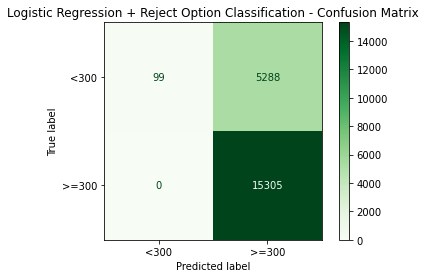
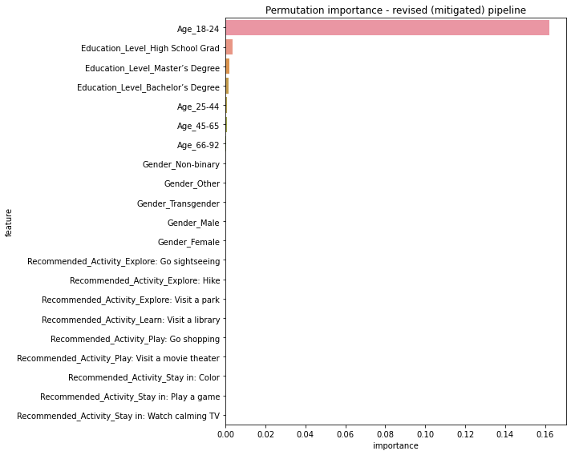
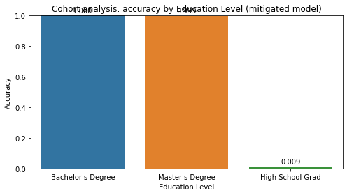

Model Card - IDOOU AI Budget Predicter
Model Details
-- Budget Predicter AI is a supervised binary classification model that predicts whether an IDOOU user's activity budget is >= $300 or < $300.
-- It was built with scikit-learn and the IBM AIF360 toolkit; the deployed version is a Logistic Regression classifier trained on a 50/30/20 train-validation-test split.
-- Inputs are self-reported categorical features: Age band, Gender, Education Level, and the recommended activity; the target is the binarized budget.
-- Version 1.0, owned by the IDOOU data science team, intended for prototyping the activity recommender and not for high-stakes financial decisions.
Intended Use
-- Estimate a user's likely activity budget so IDOOU can tailor activity recommendations to an appropriate price range.
-- Interpretability: surface the top contributing features (via permutation importance) so users can see why a budget was predicted.
-- Privacy: every requested attribute (gender, age, education) is optional; the model must degrade gracefully when fields are withheld, and data should be minimized and anonymized.
-- Fairness: IDOOU should prompt the user to confirm or correct the predicted budget (human-in-the-loop), preventing a biased prediction from silently constraining recommendations.
-- Not intended for credit, lending, eligibility, or any consequential socioeconomic decision-making.
Factors
-- Key demographic factors: Age band, Gender, and Education Level, with Education Level being the protected attribute analyzed for fairness.
-- Groups: privileged = users with Bachelor's/Master's degrees; unprivileged = users who only graduated high school.
-- Environment: self-reported survey data with substantial missingness that was removed before training, which shifts the represented population toward younger, higher-education users.
Metrics
-- Performance is reported with overall accuracy and a confusion matrix (false positives / false negatives) on the held-out test set.
-- Fairness is measured with statistical parity difference, disparate impact, average odds difference, equal opportunity difference, and the Theil index (via AIF360).
-- A 0.5 decision threshold is used for the reported confusion matrix; balanced accuracy is used when scanning thresholds and after mitigation.
Training Data
-- ~50% of the cleaned dataset (rows with any missing Age, Gender, Education, or children field removed), restricted to Bachelor's, Master's, and High School graduates and one-hot encoded.
Evaluation Data
-- A held-out 20% test split (with a separate validation split used for tuning the bias-mitigation threshold), drawn from the same cleaned and encoded distribution as the training data.
Quantitative Analysis
-- The budget predictor was evaluated on the held-out test set before and after applying the Reject Option Classification (ROC) post-processing bias-mitigation strategy.
-- Before mitigation (Logistic Regression): statistical parity difference = -0.9936, equal opportunity difference = -1.0000, balanced accuracy = 0.9978.
-- After mitigation (LR + ROC): statistical parity difference = 0.0064, equal opportunity difference = 0.0000, disparate impact = 1.0065, balanced accuracy = 0.5092.
-- Interpretation: the statistical parity difference and equal opportunity difference both moved close to their ideal value of 0, and disparate impact moved close to 1, sharply reducing the gap in favorable (>= $300) predictions between the privileged (Bachelor's/Master's) and unprivileged (High School) groups.
-- This came at a modest cost to raw accuracy, which is an acceptable trade-off since the goal of the project is to improve fairness rather than maximize accuracy.
Results of the AI model after applying the bias mitigation strategy



Ethical Considerations
-- Human-in-the-loop: users can control the model by leaving demographic fields blank and by confirming or correcting the predicted budget in the app, and the permutation-importance view lets them inspect which features drove the prediction.
-- Data limitations and bias: the survey data has heavy missingness (gender, education, and children fields), and dropping those rows over-represents younger users and users with Bachelor's/Master's degrees, embedding sampling and representation bias.
-- Model failures: on this synthetic data the classifiers are near-perfect, so only a small number of false positives (predicting >= $300 for a high-school user) and false negatives occur, but each one propagates the label's built-in correlation with education.
-- Risk mitigation: Reject Option Classification (post-processing) was applied to bring statistical parity difference and equal opportunity difference close to 0 and disparate impact close to 1, reducing the favorable-outcome gap between privileged and unprivileged education groups.
-- Potential harms: without mitigation the model systematically assigns lower budgets to high-school graduates, which could restrict their recommendations and reinforce socioeconomic stereotypes.
-- Key contributing factors: before mitigation, the Age 18-24 band and the Education Level features dominated the predictions (per permutation importance); after mitigation the same underlying features drive the base model but the post-processing rebalances outcomes across education groups.
Caveats and Recommendations
-- The dataset lacks inclusiveness: users who declined to answer were dropped, and only Bachelor's, Master's, and High School cohorts are modeled, so results do not generalize to "Did Not Graduate HS" or "Other" users.
-- The model can be predisposed to false positives/negatives near the $300 boundary; predicted budgets should be treated as suggestions, not authoritative values.
-- Budget should never be used as a proxy for creditworthiness or socioeconomic status in any downstream decision.
-- Further ethical AI analyses I would apply beyond this project: intersectional subgroup fairness (e.g., education x gender x age), counterfactual fairness testing, comparison of multiple mitigation techniques (pre/in/post-processing), and analysis of imputing missing data instead of removing rows.
Business Consequences
-- Positive Impact: Accurate, fairness-aware budget predictions let IDOOU recommend appropriately priced activities, improving personalization, engagement, and conversion while demonstrating responsible AI practices.
-- Negative Impact: If users perceive that recommendations are gated by their education level, they may lose trust and abandon the app; biased or incorrect budget predictions could trigger reputational damage, negative reviews, regulatory scrutiny, and lost revenue.